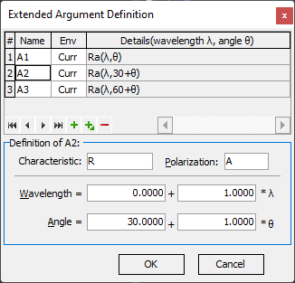

Extended Argument Definition
Extended Argument Definition
Navigation: OptiLayer Menu Commands > Data Menu > Target Editor >
Extended Argument Definition
` <userdefinedtargeteditor.html>`__ ` <target_editor.html>`__ ` <idh_modify_angles.html>`__
At times, it may be necessary to connect spectral characteristics at different wavelengths, angles of incidence, or even computed in different environments within the same user-defined target. This can be achieved using the Extended Argument Definition dialog, which extends the User-Defined Target Editor. As a result, a wide range of non-standard multilayer synthesis problems can be formulated and solved with this option.

The control buttons in the Extended Argument Definition dialog allow you to insert, append, and delete definitions of new targets.
The Name column lists the names of all defined UDT arguments
The Env column specifies the environment at which an argument is defined. “Curr” indicates the current environment by default, but you can specify a specific environment number. Multiple environments should be defined using the Environment Manager in this case.
The Details(…) column provides each existing definition for easier management as a formula.
The definition details for each selected Extended Argument can be edited in the “Definition of …” group of controls. You can edit the parameters independently for each row selected in the upper grid view. The Characteristic and Polarization entry fields configure the type of specific spectral characteristics.
The Wavelength field specifies the formula for wavelength conversion in the form A + B * λ. The default values are A = 0 and B = 1, corresponding to identity conversion with respect to the wavelength.
The Angle field specifies the formula for angular conversion in a similar form C + D * θ. The default values are C = 0 and D = 1, representing identity conversion with respect to the angle.
For example, selecting the value A2 in the screenshot provided introduces Ra values at the same wavelength but at an angle of incidence 30° higher than the current target angle.